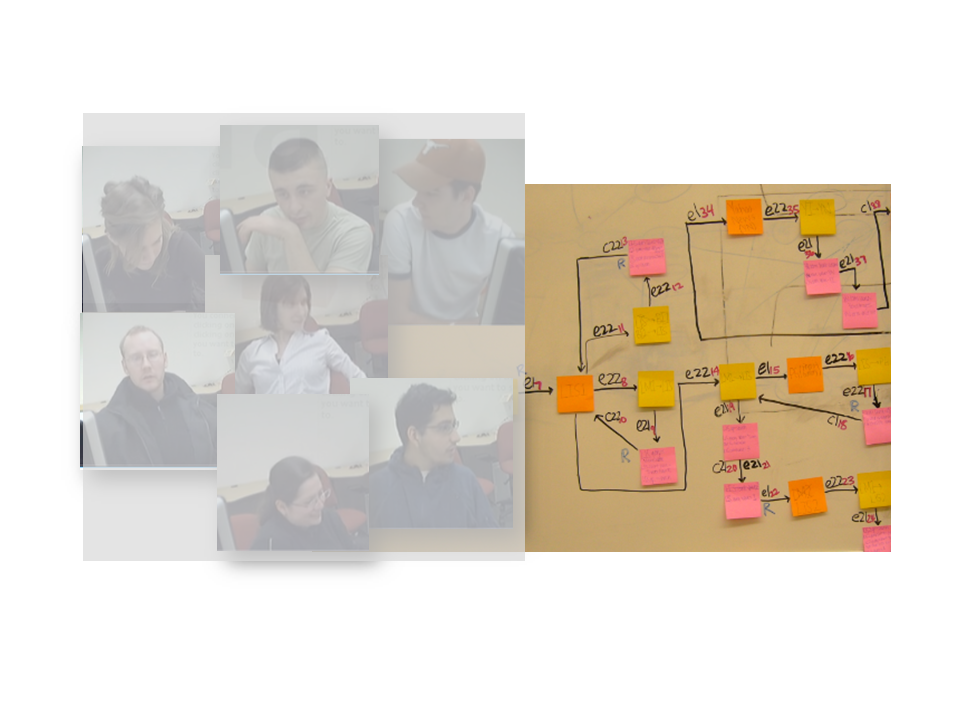

An Idea Garden for End-User Programmers (Ph.D. thesis)
Tags: user research, interaction design, prototyping, qualitative study, quantitative study
Time frame: 2009 - 2014
Responsibilities
- Lead project from conception to completion
- Developed research plan
- Analyzed data and reported findings in peer-reviewed publications
- Supervised undergrads and high school research assistants
This is my PhD thesis work aimed at understanding and helping end-user programmers. End-user programmers are users who program in order to accomplish their own tasks. An example of an end-user programmer is a scientist who programs a simulation in order to verify a theory. Users such as the scientist often lack necessary programming skills to succeed in their programming endeavors upfront. In addition, they tend to avoid in-advance learning that can help them in the long-run and prefer to pick up programming knowledge as needed.
To help end-user programmers gain the skills they need to succeed in programming, I developed a new method for designing programming assists called the Idea Garden. Following the Idea Garden method, the designer of a programming environment can create problem-solving hints within the environment itself to assists end-user programmers as they work on their programs. Empirical data showed that Idea Garden assists enabled users to learn programming skills in the context of their own programming tasks and helped them write significantly better code than those without access to the assists.
For more details, check out the following.
| User Research | Interaction Design & Protoyping | Usability Testing |
|---|---|---|
|  |  |
 |